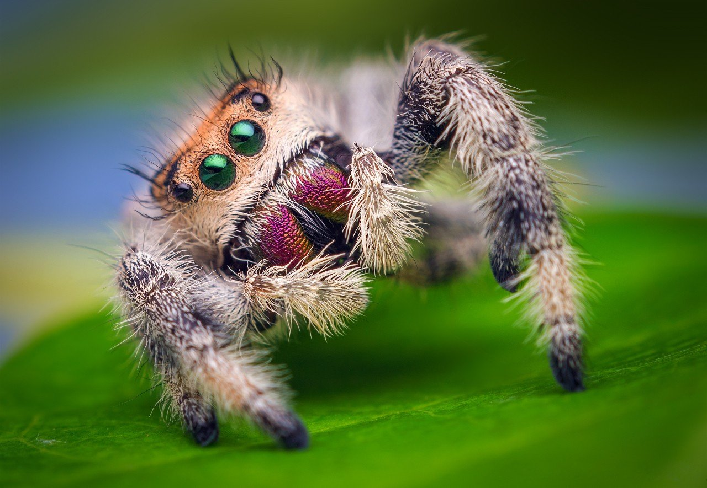

Пауки-птицееды все больше и больше завоевывают сердца людей и догоняют рыбок по популярности, как домашних животных. Всего насчитывается более семи сотен видов и этот список каждый год пополняется, но существуют виды, завоевавшие наибольшую популярность в содержании. Такие пауки обладают красивым окрасом, интересным поведением и большой плодовитостью, и вследствие этого получили большое распространение среди любителей содержать экзотику дома.